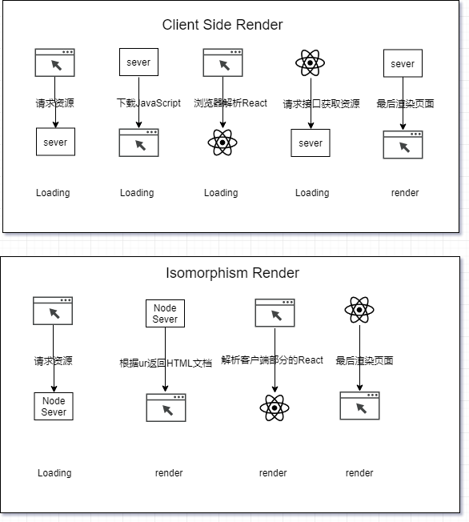

Front-end habitat
简单一文助你理解同构
阅读本文你可以了解到
1.客户端渲染，传统的服务端渲染和同构的概念
2.它们之间的区别及优缺点
3.预渲染的简单概念和预渲染跟同构的比较
4.用React来简单举例同构配置
5.同构中脱水和注水
6.具体实践中的一些问题

客户端渲染，服务端渲染，同构渲染分别是什么
- 服务端渲染:服务器直接生成的HTML文档直接返回给客户端浏览器，浏览器将HTML文档输出呈现至用户界面。
- 客户端渲染:页面首先加载JS文件，然后动态生成HTML文档挂载在对应的节点上。
同构 :同构应用是通过客户端和服务端共同作用而成的。服务端先执行HTML文档的生成后，将HTML文档传递给客户端，客户端激活接管后续的页面交互功能。
传统的服务端渲染虽然对SEO友好，但是对页面交互性能比较有限，通常都会引入JavaScript来辅助实现交互功能。客户端渲染则相对来说对SEO不太友好，由于页面上不存在DOM节点所以无法让搜索引擎搜到对应的信息，其次因为首次加载JS可能体积过大，首屏渲染时间过长，对用户的体验不太友好。同构应用的出现就是为了解决SEO和首屏渲染问题的
浏览器原生解析HTML会省去JavaScript请求和编译的时间
客户端渲染与同构渲染的区别
客户端渲染首次渲染页面的时间比较长，一般来说会经历三次HTTP请求:
- 加载HTML文档(文档是单页面，里面仅仅包含一个root节点)
- 加载文档中的JavaScript文件
- JavaScript文件中的AJax请求数据
- 加载HTML文档(文档是单页面，里面仅仅包含一个root节点)
同构渲染的首次渲染相对来说比较快，一般来说经历两次HTTP请求:
- 请求后端服务(Node.js返回的HTML文档)
- 加载HTML文档所需的JavaScript
- 请求后端服务(Node.js返回的HTML文档)
同构的优缺点
同构的优点:
首屏渲染速度更快。
同构请求后直接返回的是HTML，而不是返回的JavaScript资源。省去了解析JavaScript再进行请求的操作。有利于SEO
正因为同构请求回来的是HTML文档，所以对于搜索引擎检索也会有所帮助。相对的客户端渲染返回的是仅仅是JavaScript，并没有真正对应的节点大大减少了SEO可检索的信息前后端可复用部分代码
其实同构其实没有降低前端的代码量，仅仅是将部分前端代码放到后端Node.js的环境中先执行，再返回给浏览器接管后继续执行后面的代码，而且前面部分的代码还需要兼容Node的环境，需要额外的成本。在移动端比较友好
对于低端的机型，不支持4G 5G的手机来说，可能请求的速率会有所变慢。客户端渲染请求的次数比较多，可能对于低端机型来说不太友好。相反的同构因为是直出HTML的原因，所以可以直接呈现HTML，用户体验相对来说较为友好。
同构的缺点:
性能的瓶颈
服务端所需要处理的逻辑增多，对服务端的性能要求比较高(假如原来放在几百万浏览器端的计算工作量，现在用几台服务器进行计算，性能是一个严重的考验)服务器和浏览器的差异
服务端无法完全复用客户端的代码。在服务端某些特定的与客户端某些特定的变量，对象无法完全的复用。(document,window等对象的不存在，前端和服务端渲染的内容不一致等)内存溢出问题
原本前端代码只在浏览器端执行的时候，浏览器环境刷新一遍就会重置内存，但是代码放到后端执行就没有这种自动重置的优势了。异步操作
前端可以做复制的合并请求再延迟处理，但是同构都是预先拿到结果才会渲染的，这些请求往往都是很多依赖条件的。store
store必须是以字符串形式塞到前端中，复杂类型是无法转义成字符串的(例如function)
同构实现的核心是
Virtual DOM
Node服务器的盛行
Virtual DOM本质上是一个普通的JavaScript对象，是对浏览器的DOM对象的一层抽象。React，Vue两个视图层的库才用VirtualDOM的原因除了性能得到很大的提升以外，更重要的是可以跨端。Virtual DOM可以在客户端输出组件挂载到对应的DOM节点上，同样的也可以在服务端生成HTML字符串并输出至客户端。
同时又因为JavaScript可以同时的运行在Node服务器和客户端浏览器上。使得同构成为可能
顺带提一下同构和预渲染
预渲染和服务端渲染
- SEO:单页应用对SEO并不友好，但是预渲染和服务端渲染HTML都是由内容的，对SEO会比较友好
弱网环境:当用户在一个弱网环境中访问你的站点的时候，可以尽快的把首屏加载出来，而不是空白页面 预渲染和服务端渲染不同
预渲染能与服务端渲染一样提高 SEO 优化，但前者比后者需要更少的配置，实现成本低。弱网环境下，预渲染能更快地呈现页面内容，减少页面可见时间。
成千上万的路由：不建议预渲染非常多的路由，因为这会严重拖慢你的构建进程。
经常变化的内容：如果你预渲染一个游戏排行榜，这个排行榜会随着新的玩家记录而更新，预渲染会让你的页面显示不正确直到脚本加载完成并替换成新的数据。这是一个不好的用户体验
预渲染的实现
- Webpack提供一个强大的插件(prerender-spa-plugin)的这个插件
- 原理主要是在webpack构建的最后阶段，在本地启动一个phantomjs，访问了配置预渲染的路由，再将phantomjs中渲染的页面输出到HTML中。并建立路由对应的目录 (PhantomJS是一个基于webkit的JavaScript API,基于webkit可以做到的东西，他都能做到，所以可以渲染路由的页面然后输出到指定的dist文件夹中，并建立路由与之对应的目录)
简单的用React介绍一下同构
同构的一般架构
|- config --------------------------- webpack的config |- dist ---------------------------- 打包后的文件 |- mock -------------------------- 需要的mock数据 |- node_modules |- src |- assets ----------------------- 静态资源文件通常放图片 |- components --------------- 公共组件 |- client |- entry-client.js -------- 客户端的入口文件 |- views ------------------ 视图 |- styles ------------------ 公共样式和组件样式 |- ... |- server |- entry-server.js ------ 服务端入口文件 |- setup-devServer.js--- 开发时的热更新 |- ... |- shared |- routes ----------------- 部分相同的路由 |- store ------------------ 部分相同的store |- utils ----------------------- 工具函数 |- .babelrc ------------------------ babel配置文件同构配置的重点
配置是分客户端和服务端的一共两份配置。客户端的就是原来的客户端。不需要多修改
服务端的配置
// webpack.server.config.js module.exports = { target:"node"// 告诉webpack打包的是运行在node环境， // 打包完之后是module.exports包裹，而不是一个IIFE entry:{ serverApp:path.jain(__dirname,"/sever/entry-sever.js") // 客户端和服务端的入口都不是不一样的 } ... module:{ rules:[ { test: /\.css$/, use: [ // 这个是将css输出成字符串注入到html中 相当于客户端配置的style-loader // 因为style-loader是有document 和 window这些对象的 { loader: "isomorphic-style-loader" }, { loader: "css-loader", options: { importLoaders: 1, sourceMap: true, // css-loader 最新的版本是将 localIdentName 放在modules 配置里面 modules: { localIdentName: "[name]_[hash:5]", }, } } ] }, ] } ... output:{ libraryTarget:"commonjs2" // 这里commonjs2是指用最新的commonjs规范来打包 } ... // 在服务端中模块都在内存中，不需要再次引入 externals : [ nodeExternals()] }启动Node服务器(express)
const app = express() ... app.use("/public", express.static(path.join(__dirname, "../../dist/"))); // 引用静态文件 ... app.get("/:path", function(req, res) { // ServerApp是server的入口 // .default是因为是用ES6的模块导出方式，在Node中引入要使用default let html = ReactDOMServer.renderToString(ServerApp.default(req,res)); // 这里因为是export default导出来的 let htmlStr = HTMLTemplate.replace( "<!-- app -->", html ); // 将渲染后的html字符串发送给客户端 res.send(htmlStr); }); ...路由方面的不同
服务端的路由
import { StaticRouter } from "react-router-dom"; // 服务端中没有DOM 所以不能使用BrowserRouter import Routers from "../shared/router"; const ServerApp = function() { return ( // StaticRouter 必须要传两个参数 一个是context 和 location <StaticRouter context={context} location={req.url}> <Routers /> </StaticRouter> ); };客户端的路由
import ReactDOM from "react-dom"; import {BrowserRouter} from "react-router-dom" import Routers from "../shared/router" const Client = ()=>{ return( <BrowserRouter> <Routers/> </BrowserRouter> ) } // ReactDOM 在16.5以后就使用hydrate代替render ReactDOM.hydrate( <Client/>, document.getElementById("root") );脱水和注水
在正常React应用中，我们通常会在ComponentDidMount的生命周期中执行Ajax相关请求获取数据。
class App extends React.Component{ ... componentDidMount(){ axios.get('http://xxx.xxx.com/xxx/list') .then((res) => { this.setState({ list: res.data.data }) }) } ... }这样确实能拿到数据，但是右键查看网页源代码的时候就会发现是这种样子。
这是因为服务端不会执行ComponentDidMount的生命周期，这个ajax请求只会在客户端中进行请求。所以查看源代码是不会出现有数据的。这个时候就是要在进入路由之前 需要执行一次ajax请求拿到数据，然后写入HTML页面中并返回。
路由中有一个配置项叫loadData，专门用于服务端先获取数据的
// 对路由进行小改动一下。
// routes.js
export default [
{
path: ...,
component: Home,
exact: ...,
loadData: Home.loadData,//服务端获取异步数据的函数
}
];
// Home.jsx
class Home extends React.Component{
...
static loadData = store => {
return store.dispatch();
};
...
}
// 或者是这样写
function Home(){}
Home.loadData = store => {
return store.dispatch();
};
数据拿到以后，要存在哪里呢？这时候我们应该可以想到就是存在store中。store就是类似Redux这种统一管理数据流的库。
因为客户端和服务端的配置不一样。因为客户端需要共享数据，所以只需要生成一个store即可。假如在 服务端中只生成一个store，但是每个用户访问进来的store都是相同的store，这时候就不能做到每个用户只有自己的store。
// store.js
import reducers from "reducers";
// 这里因为React中需要的是纯函数，但是异步操作都是有副作用的，所以要引入redux-thunk中间件来帮助我们处理异步操作。
import thunk from "redux-thunk";
// 这里有一个初始化的state(在服务端注水的时候初始化的)
const createclientStore = (preloadedState) => {
return createStore(reducers,
preloadedState, applyMiddleware(thunk));
};
const c = () => {
return createStore(reducers, applyMiddleware(thunk));
};
// Server-entry.jsx
function serverApp(){
...
const store = createServerStore(); // 每次都要生成一个Store
...
}
// Client-entry.js
const store = createclientStore(); // 永远只有一个store
function clientApp(){
...
return (
<Provider store={store}>
...
</Provider>
);
...
}
// ServerApp 每次触发更新都会执行一次createServerStore,但是ClientApp更新不会再执行createClientStore
这里存放数据的容器store也准备好了，最后只需要执行完所有的loadData的方法，拿到数据注入即可。但是又有一个问题，我们怎么知道 我们匹配的路由有loadData这个方法呢，假如匹配到有两个组件同时加载，我们又怎么可以一起执行并返回呢。
这时候我们就得用上react-router-config了
import { matchRoutes,renderRoutes } from "react-router-config";
// matchRoutes会返回匹配的一个数组，renderRoutes会返回一个
// 改写一下 ServerApp.js
function serverApp(req){
const matchedRoutes = matchRoutes(routes, req.path);
let promises = [];
const store = getStore(); // 每次都要生成一个Store
matchedRoutes.map(val => {
if (val.route.loadData) {
// 传入store传递指令 执行action对应的reducers
promises.push(val.route.loadData(store));
}
});
// 因为这里是异步操作，而且可能是多个异步的操作，所以需要借助promise来实现所有异步操作完后执行渲染
Promise.all(promises).then(data => {
let htmlStr = ReactSSR.renderToString()
...
res.send(htmlStr);
...
})
}
这里仅仅实现了服务端是有数据的，但是客户端因为没有请求接口，无法拿到对应的数据，所以这里还要一个注水的操作。注水的意思是 将服务端的数据注入到HTML页面中。当执行客户端渲染的时候，直接在HTML页面中拿到全部数据进行渲染，从而实现客户端和服务端渲染同一份数据。
// 服务端注水操作
// 这里的template 是在express中传入 或者可以直接手写string模板都可以
// template.html
...
<div id="root">
</div>
<!-- script -->
...
// ServerApp.js
function serverApp(req,res,template){
// 这里是将整个store传递过去。
template.replace("<!-- script -->",`<script>window.__INITIAL_STATE__ = {data:${JSON.stringify(store.getState())}}</script>`)
}
// store.js
const createclientStore = (preloadedState) => {
// 当时这里的 preloadedState,就是服务端注水时候的state
return createStore(reducers,
preloadedState, applyMiddleware(thunk));
};
// ClientApp.js
const store = createclientStore(window["__INITIAL_STATE__"].data);// 初始化的数据是通过注水来的
// 这样客户端就能拿到数据并注入到全局的store中
function clientApp(){
// 这里是脱水操作
return (
// 客户端也要 进行 new一个新的 store
<Provider store={store}>
...
</Provider>
);
}
5.具体实践可能遇到的问题
问题：样式可能会抖动的情况。
因为服务端返回给客户端的仅仅是一个HTML。假如服务端中的HTML没有样式的话，这个样式只能通过客户端解析css然后出现。但是我们第一次看到的是
服务端的代码。等待客户端解析完后，样式显示出来，所以就会有一个抖动的情况。
解答：将样式输出为string注入到HTML中(但是需要将css 用css module的形式才能输出成string)